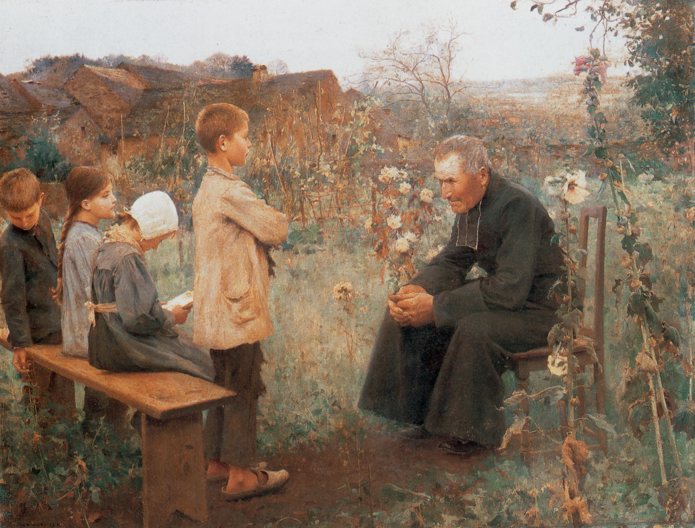

西敏小要理问答(第10-12问)

温习
问9：创造之工是什么？
答： 创造之工，是神用祂权能的话，在六日之内，从无有中造出万有，并且都甚好。
略解 ： 这里告诉我们，神用祂的话创造了天地万物。并且祂所造的一切都是甚好的。神的创造显示了祂的智慧、权能和良善。
第十问
问10：神怎样造人？
答： 神照着自己的形像1 造男造女2，有知识、仁义、圣洁3，并赋予他们管理、支配一切受造之物的权柄4。
略解 ： 这里告诉我们，人是按神的形像被造。他的灵魂有与神相似的仁义与圣洁，并有理性；其他任何受造物都没有这样的天赋，并且它们必须服在人的权柄之下。
1 西三10。2 创一27。3 弗四24。4 创一28。
疑问
在创造后，上帝还继续做工吗？
参：来一3，徒十七28
人被造时有什么样的公义（参：传7:29）
亚当的意思是单指男人吗？
护理之工
第十一问
问11：神的护理之工是什么？
答：神的护理之工，就是用祂至高的圣洁1、智慧2、权能，保护祂所造的万物3，并且管理他们一切的动作4。
略解： 不单创造世界需要神的权能，要维持这个世界也一样必须倚靠神的权能。我们无法靠赖自己而存活，万有的动作、存留都在乎神。所以这个答案告诉我们，神不仅创造万物，祂也照顾万物；并为祂自己荣耀的缘故，祂使万物生存，保守他们免于危险，并掌管、治理他们的一切行动。
1 诗一四五17。2 赛廿八29。3 太十29；来一3。4 诗一○三19。
疑问
神的“护理”与人的“自由意志”之间是什么关系？如果万有都在乎神，人还需要为自己的选择负责吗？
参：创五十20、罗八28；
既然神“保护祂所造的万物”，为什么世界上仍然有许多天灾、疾病和不公义的事情发生？
参：罗五12、雅一13、启二十一4
护理之工
第十二问
问12：神造人的时候，有什么特别的护理之工？
答：当神造人时，就与人立了生命之约（covenant of life）──这约是以完全顺服为条件1，禁止人吃分别善恶树的果子，否则必受死亡的刑罚2。
略解：当神造亚当、夏娃的时候，祂说：若他们遵守祂的诚命，就能永远存活；若违反诫命，就必定死──这就是生命之约。之后，神就下了第一道诫命：他们不可吃分别善恶树上的果子。但他们却吃了，这实在显示出他们是多么不愿意在凡事上都顺服神。
1 加三12。2 创二17。
疑问
为什么神要与人立约？
为什么神要用“不可吃分别善恶树的果子”这一条诫命作为“生命之约”的条件？这棵树本身有什么特别之处吗？
“完全顺服”的标准是什么？神造人时，人有能力做到“完全顺服”吗？
既然亚当夏娃违约了，这个“生命之约”现在是否还对人类有效？
参：罗三20, 23、加三10-12